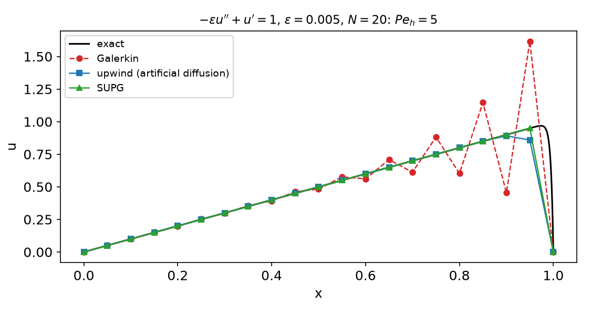
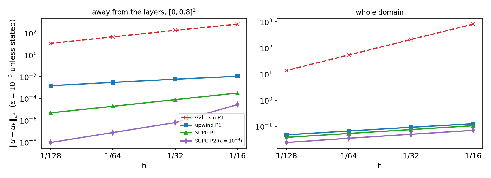
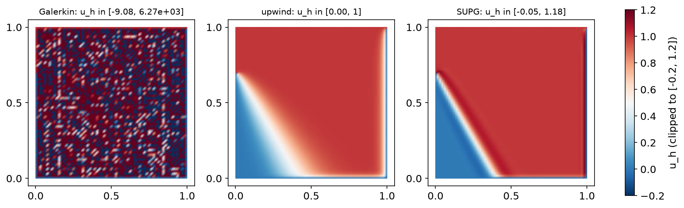

AI-based Materials and Process Simulation I
Week 13 — Advection–Diffusion: Péclet Number · Galerkin Oscillations · Upwinding · SUPG
Process Systems Laboratory
Department of Chemical and Biomolecular Engineering, SeoulTech
Today
| Part | Topic | Time |
|---|---|---|
| Quiz | Week 12 (Schur complement, block preconditioners, Darcy) | 10 min |
| A | Theory — Péclet numbers, layers, why Galerkin oscillates, upwinding, SUPG | 55 min |
| B | DOLFINx 0.11 — SUPG forms, \tau, test problems with layers | 35 min |
| C | Measurements — 1D, 2D boundary layers, \tau, internal layers | 35 min |
| D | LLM pitfalls with stabilized methods · HW12 | 15 min |
Lab notebook: W13_lab.ipynb · Homework: W13_HW12.ipynb (due before Week 14)
Where we are
| Week | Operator | What made the discretization work |
|---|---|---|
| 5–7 | -\nabla\cdot(k\nabla u) | coercive and symmetric: Galerkin is the best approximation in the energy norm (Céa) |
| 11–12 | Stokes | inf-sup: the right pair of spaces |
| 13 | -\varepsilon\Delta u+\mathbf b\cdot\nabla u | coercive, but with constant \varepsilon and continuity constant \sim|\mathbf b| — Galerkin is stable only on paper |
| 14–15 | Navier–Stokes | the same convection term, now nonlinear |
Heat and mass transport in a moving fluid: the reactor, the heat exchanger, the extruder, the Course II tubular reactor (species advection–diffusion–reaction with SUPG). In process equipment \varepsilon/(|\mathbf b|L) is often 10^{-3}–10^{-6}.
Part A — Theory
§A1 The advection–diffusion problem
-\varepsilon\Delta u+\mathbf b\cdot\nabla u=f\ \text{in }\Omega,\qquad u=g\ \text{on }\partial\Omega,\qquad \nabla\cdot\mathbf b=0 .
Weak form: a(u,v)=\varepsilon(\nabla u,\nabla v)+(\mathbf b\cdot\nabla u,v)=(f,v) for all v\in H^1_0.
- (\mathbf b\cdot\nabla v,v)=\tfrac12\int\mathbf b\cdot\nabla(v^2)=-\tfrac12\int(\nabla\cdot\mathbf b)v^2=0 ⇒ a(v,v)=\varepsilon|v|_1^2: coercive with constant \varepsilon.
- |a(u,v)|\le(\varepsilon+C_P|\mathbf b|_\infty)|u|_1|v|_1: continuity constant \sim|\mathbf b|.
- Céa: |u-u_h|_1\le\big(1+C_P|\mathbf b|/\varepsilon\big)\inf_{v_h}|u-v_h|_1 — the constant is the Péclet number.
Definition — Péclet numbers
Global \mathrm{Pe}=|\mathbf b|L/\varepsilon; mesh Péclet number \mathrm{Pe}_h=|\mathbf b|h/(2\varepsilon): advection vs diffusion across one cell.
§A2 Layers
1D model: -\varepsilon u''+u'=1, u(0)=u(1)=0: u(x)=x-\frac{e^{(x-1)/\varepsilon}-e^{-1/\varepsilon}}{1-e^{-1/\varepsilon}} .
- Away from x=1: u\approx x, the solution of the reduced problem u'=1, u(0)=0 (one boundary condition — the inflow one).
- At the outflow boundary the second condition is enforced in an exponential boundary layer of width O(\varepsilon/|\mathbf b|).
- In 2D: outflow layers (exponential), characteristic (parabolic) layers along walls parallel to \mathbf b, and interior layers where discontinuous inflow data are transported along streamlines.
A mesh with h\gg\varepsilon/|\mathbf b| cannot resolve the layer. The question is what the method does with what it cannot resolve: pollute the whole domain, or keep the damage inside the layer.
§A3 Why Galerkin oscillates: the 1D stencil
P1 on a uniform mesh, f=0, divide by \varepsilon/h: central differences -(1+\mathrm{Pe}_h)\,u_{i-1}+2u_i-(1-\mathrm{Pe}_h)\,u_{i+1}=0 .
Ansatz u_i=r^i: (1-\mathrm{Pe}_h)r^2-2r+(1+\mathrm{Pe}_h)=0 ⇒ r=1 or r=\dfrac{1+\mathrm{Pe}_h}{1-\mathrm{Pe}_h}, so u_i=A+B\,r^i.
| \mathrm{Pe}_h | 0.25 | 1.25 | 2.5 | 5 | 250 |
|---|---|---|---|---|---|
| r | 1.667 | −9.000 | −2.333 | −1.500 | −1.008 |
\mathrm{Pe}_h>1 ⇒ r<0: the discrete solution alternates in sign from node to node, and the oscillation reaches all the way upstream (|r|\to1). Equivalently the matrix loses the M-matrix property (positive off-diagonal entry -(1-\mathrm{Pe}_h)): no discrete maximum principle.
§A4 Upwinding and the optimal diffusion
Artificial diffusion: replace \varepsilon by \varepsilon+\tilde\varepsilon.
- \tilde\varepsilon=|\mathbf b|h/2 (full upwind): effective \mathrm{Pe}_h\le1 always — monotone, M-matrix — but the method solves a different equation: O(h) consistency error.
- Optimal (Il’in, Allen–Southwell): \tilde\varepsilon=\dfrac{|\mathbf b|h}{2}\,\xi(\mathrm{Pe}_h), \quad\xi(z)=\coth z-\dfrac1z — nodally exact in 1D for constant data.
\xi(z)\approx z/3 for small z (no diffusion added when the mesh resolves the layer), \xi(z)\to1 for z\to\infty (full upwind).
In 2D, isotropic artificial diffusion also smears across the streamlines (crosswind), where no stabilization was needed. Brooks & Hughes (1982): add the diffusion only along \mathbf b, and do it in a consistent way.
§A5 SUPG — streamline upwind Petrov–Galerkin
SUPG (Brooks–Hughes 1982)
Find u_h\in V_h such that for all v_h\in V_h a(u_h,v_h)+\sum_K\tau_K\big(-\varepsilon\Delta u_h+\mathbf b\cdot\nabla u_h-f,\ \mathbf b\cdot\nabla v_h\big)_K=(f,v_h),\qquad \tau_K=\frac{h_K}{2|\mathbf b|}\,\xi(\mathrm{Pe}_K),\ \ \mathrm{Pe}_K=\frac{|\mathbf b|h_K}{2\varepsilon}.
- Petrov–Galerkin: the test function is v_h+\tau\,\mathbf b\cdot\nabla v_h — upwind-weighted along the streamline.
- Consistent: the added term is the element residual times \mathbf b\cdot\nabla v_h; it vanishes for the exact solution, so Galerkin orthogonality a_{\text{SUPG}}(u-u_h,v_h)=0 holds.
- Stabilization acts only along \mathbf b: \tau(\mathbf b\cdot\nabla u_h,\mathbf b\cdot\nabla v_h) is diffusion in the streamline direction.
- For P1, \Delta u_h=0 inside each cell; for P2 and higher, the term -\varepsilon\Delta u_h must stay.
- 1D, P1: SUPG with this \tau = the optimal artificial diffusion of §A4.
§A6 What SUPG guarantees — and what it does not
Theorem (stability and error, Pk, \tau_K\sim h_K/|\mathbf b| in the convection-dominated regime)
a_{\text{SUPG}}(v_h,v_h)\ge\tfrac12|||v_h|||^2 with |||v|||^2=\varepsilon|v|_1^2+\sum_K\tau_K\|\mathbf b\cdot\nabla v\|_K^2, and |||u-u_h|||\le C\big(\varepsilon^{1/2}+h^{1/2}\big)h^k|u|_{k+1}\quad\Rightarrow\quad\|u-u_h\|_0=O(h^{k+1/2})\ \text{for smooth }u.
- Control of the streamline derivative — the quantity Galerkin cannot control when \varepsilon\to0.
- In practice (and in the analysis of local error estimates): O(h^{k+1}) away from layers.
- Not monotone: SUPG has no discrete maximum principle; it keeps over- and undershoots at the layers (crosswind direction). Spurious-oscillations-at-layers-diminishing (SOLD) and algebraic flux correction add nonlinear crosswind diffusion — beyond this course.
- Inside an unresolved layer no method is accurate; the global L^2 error is dominated by the layer.
Part B — SUPG in DOLFINx 0.11
§B1 The forms
h = ufl.CellDiameter(msh) # longest edge of the cell (P2: use h/2)
bn = ufl.sqrt(ufl.dot(b, b))
Peh = bn * h / (2 * eps)
tau = h / (2 * bn) * (1 / ufl.tanh(Peh) - 1 / Peh)
a = (eps * ufl.inner(ufl.grad(u), ufl.grad(v)) + ufl.dot(b, ufl.grad(u)) * v) * ufl.dx
L = f * v * ufl.dx
R = -eps * ufl.div(ufl.grad(u)) + ufl.dot(b, ufl.grad(u)) # residual operator (div grad u = 0 per cell for P1)
a += tau * R * ufl.dot(b, ufl.grad(v)) * ufl.dx
L += tau * f * ufl.dot(b, ufl.grad(v)) * ufl.dx| Math | UFL |
|---|---|
| h_K | ufl.CellDiameter(msh) (also Circumradius, MinCellEdgeLength) |
| \xi(z)=\coth z-1/z | 1 / ufl.tanh(z) - 1 / z |
| \sum_K(\cdot,\cdot)_K | * ufl.dx — the cellwise quantities are evaluated per cell automatically |
| \Delta u_h inside K | ufl.div(ufl.grad(u)) (broken second derivatives) |
The system is non-symmetric: LU (MUMPS) or GMRES, never CG.
§B2 Test problems with layers
1D: -\varepsilon u''+u'=1 (exact solution in §A2). 2D: \mathbf b=(2,3), f from u=xy^2-y^2e^{2(x-1)/\varepsilon}-x\,e^{3(y-1)/\varepsilon}+e^{(2(x-1)+3(y-1))/\varepsilon} — u=0 on \partial\Omega, layers of width \varepsilon/2 at x=1 and \varepsilon/3 at y=1, smooth part xy^2 (\Delta\ne0).
- Write exponentials as decaying ones: e^{(x-1)/\varepsilon}\le1. The algebraically equivalent (e^{x/\varepsilon}-1)/(e^{1/\varepsilon}-1) is
inf/inf = nanfor \varepsilon=10^{-4}. - Measure the error away from the layers as well (here on [0,0.8]^2, a
ufl.conditionalindicator) and integrate with a high quadrature degree (8). - f from UFL:
f = -eps * div(grad(u_ex)) + dot(b, grad(u_ex)).
§B3 Interior layers: the skew advection test
\varepsilon=10^{-8}, \mathbf b=(\cos(-\pi/3),\sin(-\pi/3)), f=0; u=1 on \{y=1\} and on \{x=0,\ y>0.7\}, u=0 elsewhere on \partial\Omega.
- The jump at (0,0.7) is carried along \mathbf b: an interior layer; exponential layers where u must drop to 0 at x=1 and y=0.
- No exact solution formula — but 0\le u\le1 (maximum principle). The range of u_h measures the over- and undershoots.
Part C — Measurements
§C1 1D: Galerkin, upwind, SUPG

N=20: SUPG nodal errors 3\times10^{-15} … 3\times10^{-16} for every \varepsilon (\mathrm{Pe}_h=0.25 to 250). Galerkin \max u_h: 1.061, 1.379, 1.617, 13.4 for \mathrm{Pe}_h=1.25,2.5,5,250 (exact maxima 0.902–0.999). Upwind: monotone, nodal error 0.08–0.20 for \mathrm{Pe}_h\le5.
§C2 2D boundary layers: errors away from the layers

\varepsilon=10^{-6}, P1, N=16\to128: Galerkin \max u_h 2681 → 49; upwind away-error rate 1.0 (monotone, \max u_h<1); SUPG away-error rate 2.0 (4.8\times10^{-6} at N=128). P2 SUPG (\varepsilon=10^{-4}): rate 3.0. Whole domain: upwind and SUPG \approx0.5 — the unresolved layer (Galerkin’s slope 2 is its oscillation amplitude decaying from 8\times10^2 to 14).
§C3 The same table for three Péclet numbers
| \varepsilon | Galerkin away error (N=128) / \max u_h | upwind away / rate | SUPG away / rate / \max u_h |
|---|---|---|---|
| 10^{-2} | 4.8\times10^{-6} / 1.03 (nearly resolved: \mathrm{Pe}_h\approx2) | 1.5\times10^{-3} / 1.0 | 6.7\times10^{-6} / 1.84 / 0.913 |
| 10^{-4} | 0.12 / 3.30 | 1.5\times10^{-3} / 1.0 | 4.8\times10^{-6} / 2.00 / 1.129 |
| 10^{-6} | 11.2 / 49.1 | 1.5\times10^{-3} / 1.0 | 4.8\times10^{-6} / 2.00 / 1.141 |
- Once the mesh resolves the layer (\mathrm{Pe}_h\lesssim1), Galerkin is the best method — SUPG’s \xi(\mathrm{Pe}_h)\approx\mathrm{Pe}_h/3 switches itself off.
- SUPG overshoots by 13–14 % at the layer for \varepsilon\le10^{-4} (exact \max u<1): accurate away from layers, not monotone at them.
- Making Galerkin work by refinement needs h<2\varepsilon/|\mathbf b|: for \varepsilon=10^{-6}, |\mathbf b|\approx3.6, about 1.8\times10^6 cells per direction.
§C4 \tau matters — and so does consistency
| P1, \varepsilon=10^{-4}, N=16\to128 | away error | rates | \max u_h / \min u_h (N=128) |
|---|---|---|---|
| \tau as in §A5 | 3.2\times10^{-4}\to4.8\times10^{-6} | 2.02, 2.01, 2.00 | 1.129 / 0 |
| \tau/10 | 7.2\times10^{-2}\to2.4\times10^{-4} | 1.56, 2.32, 4.36 | 2.571 / −0.549 |
| 10\,\tau | 1.2\times10^{-1}\to1.0\times10^{-3} | 1.11, 2.10, 3.72 | 0.641 / 0 |
- Too small: Galerkin-like oscillations. Too large: over-diffusion (\max u_h=0.009 at N=16 — the solution is wiped out). The “rates” above 2 are the pre-asymptotic recovery, not accuracy.
- P2, \varepsilon=10^{-2}, without -\varepsilon\Delta u_h in the residual: away-error rates 1.13, 1.46, 1.78 instead of 3.25, 3.02, 3.00 — the method is no longer consistent.
§C5 Interior layers: skew advection

Range of u_h (exact solution in [0,1]), N=16/32/64: Galerkin up to 9.7\times10^4, 2.5\times10^4, 6.3\times10^3 (meaningless); upwind exactly [0,1] but the interior layer is smeared over many cells; SUPG [-0.027,1.177], [-0.042,1.176], [-0.048,1.176] — sharp layer, bounded over/undershoots that do not go away with h.
Part D — LLMs and Stabilized Methods · HW12
§D1 Where LLM-generated advection–diffusion code goes wrong
| Kind | What it looks like | Symptom |
|---|---|---|
| \mathbf b=0 somewhere | \tau=\frac{h}{2|\mathbf b|}(\coth\mathrm{Pe}_h-1/\mathrm{Pe}_h) evaluated where \mathbf b=0 | nan in the matrix: MUMPS reason −11 (test: \mathbf b=0 on half the unit square) |
| Overflowing exact solution | (e^{x/\varepsilon}-1)/(e^{1/\varepsilon}-1) | inf/inf = nan for \varepsilon=10^{-4} |
| Wrong error measure | only the global L^2 error | every method “converges at 0.5”: the layer hides the difference (§C2) |
| Refinement instead of stabilization | “increase N until the wiggles go away” | h<2\varepsilon/|\mathbf b|: millions of cells per direction |
| Over-claiming | “SUPG removes all oscillations” | 13–18 % overshoots at layers (§C3, §C5) |
| Older API | ufl.CellSize(msh), uh.vector (legacy FEniCS) |
AttributeError in 0.11 / UFL 2026 |
A safe \tau without 1/|\mathbf b|: \tau=\dfrac{h^2}{12\varepsilon}\cdot\dfrac{3\,\xi(\mathrm{Pe}_h)}{\mathrm{Pe}_h} (the second factor \to1 as \mathrm{Pe}_h\to0) — reason 4, finite solution on the same test. Verification habit: a 1D problem with a known nodally exact answer first; then errors away from the layers, and the range of u_h.
HW12 — Péclet-number sweep, due before the Week 14 lecture
W13_HW12.ipynb (100 pts)
- Q1 (20) Theory: the 1D Galerkin difference equation, optimal artificial diffusion, consistency of SUPG
- Q2 (40) A new problem with an outflow layer: Galerkin, upwind and SUPG for \varepsilon=1\dots10^{-6}; errors away from the layer, rates
- Q3 (20) Designing \tau: optimal, asymptotic, too small, too large; P2 consistency
- Q4 (20) LLM debugging: an SUPG script with four bugs
Rules as always: Restart session and run all, -np 2 where stated, the AI-usage log, numbers only from your own cells.
For every table: the mesh Péclet number of each run, the range of u_h, and the error away from the layer.
Summary
| Concept | Key idea | DOLFINx 0.11 |
|---|---|---|
| Péclet number | Céa constant \sim|\mathbf b|/\varepsilon; \mathrm{Pe}_h=|\mathbf b|h/2\varepsilon | — |
| Galerkin oscillations | 1D root r=(1+\mathrm{Pe}_h)/(1-\mathrm{Pe}_h)<0 for \mathrm{Pe}_h>1 | — |
| Upwinding | artificial diffusion |\mathbf b|h/2: monotone, first order | + bn*h/2*inner(grad u, grad v)*dx |
| Optimal diffusion | \xi(z)=\coth z-1/z: nodally exact in 1D | 1/ufl.tanh(z) - 1/z |
| SUPG | residual × \tau\,\mathbf b\cdot\nabla v: consistent, streamline only | CellDiameter, div(grad(u)) for P2 |
| Accuracy | O(h^{k+1}) away from layers, O(h^{k+1/2}) globally (smooth u) | errors on a subdomain, high quadrature |
| Limits | overshoots at layers stay (13–18 %) | SOLD / flux correction (beyond) |
Next week — Navier–Stokes: splitting schemes (Chorin, IPCS), the CFL condition, channel flow and the DFG flow past a cylinder; HW13.